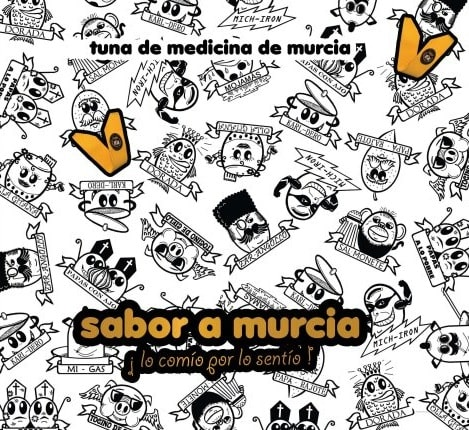
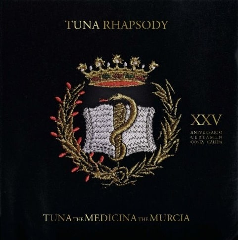
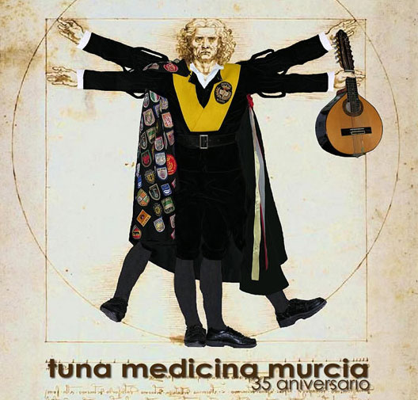

SABOR A MURCIA "LO COMIO POR LO SENTIO" (2012)  1. Bohemian (A day at the Bando) 2. Perfume de sol 3. Murcia 4. Jota de la Virgen de los Peligros 5. Luna Murciana 6. Rosa de Murcia 7. Costa Cálida 8. Paparajotes 9. Haz migas 10. Güen menú murciano 11. Pastel de carne 12. Sevillana de las tapas 13. Son del michirón 14. Habaneras del caldero 15. Rock del zarangollo 16. Paparajotes disco
TUNA RHAPSODY "SOLERA 42,5 AÑOS" (2012)  1. Perfume de sol 2. Tierra 3. Zambra Gitana 4. Canto a la espada 5. Mía 6. Brasileirinho Mix 7. Amor, vida de mi vida 8. Lisboa antiga 9. Noche embrujada 10. Por una cabeza 11. Capullito de alelí 12. Esta tarde vi llover 13. México lindo y querido 14. En un rincón del alma 15. Ondas do Douro 16. Pastel de carne 17. Güen menú murciano 18. Bohemian (A day at the Bando)
35º ANIVERSARIO (2004)  1. Hello Toni 2. España 3. Aquellos ojos verdes 4. Ahora seremos felices 5. Anahí 6. El pájaro campana 7. Habaneras del caldero 8. Luna murciana 9. María Elena 10. El gavilán 11. Petit vals 12. Obsesión 13. A mi manera 14. Son del michirón